Leviatã final · 3ª rodada, a partir do conceito original
Bloco D, passo 2 · 18/10/2026 · ← a 2ª rodada
O que mudou desta vez:
- A fonte é o conceito aprovado inteiro (
conceito-4-ferida-11-limpo, 384×216, no espaço, com a lava acesa), a imagem de onde of8-leviatafoi recortado em 24/09. Antes eu partia do recorte já processado. - O mesmo processo de hoje até o jogo: recorte do corpo, lava numa camada à parte, corpo "frio" por baixo, pontilhado que desfaz a nuvem, na mesma posição de cena. Conferi o processo no conceito original: ele reproduz o
f8-leviatade hoje sem nenhum pixel diferente. Então o que se vê abaixo é exatamente como cada candidato chegaria ao jogo. - Pedido curto: "a mesma imagem; troque só a pele pelo casco de placas, a cabeça pela da referência e as nadadeiras pelas de tubarão".
Três caminhos, dez candidatos: edição do conceito com a base como referência (4), geração com as duas referências (3) e inpaint só da cabeça e da pele, com o rombo, as costelas e a nuvem nos pixels originais (3).
O que eu preciso de você: se algum chegou ao nível da original, e qual.
✅ Instalada: edição 73 contida, no jogo
Está no capítulo 4. Os antigos estão em assets/raw/f8-leviata*-original.png. O rombo novo caiu no mesmo lugar do quadro, então a nave sai do mesmo ponto da tela (218, 75). A probe-interlude4 passa em tudo do capítulo 4. As 4 falhas dela (a nave escolhida, o banner, o título e o crédito da vitória) já existiam com a arte antiga.


A sua escolha: edição 73 · o brilho da boca contida
A pergunta: o filtro e o pós-processamento aliviam a luz exagerada? Medi em vez de supor:
- A Atmosfera do capítulo 4 (
vacuo) não alivia. A névoa mistura no máximo ~30% de roxo, igual em tudo. O halo soma luz laranja em volta de tudo que é quente e aceso. A vinheta só pega as bordas. As capturas abaixo já são com o filtro (dá para ver a névoa e o grão). - O pós-processamento (bloco J) ainda não existe. Não dá para contar com ele.
- O que alivia de verdade é a camada de lava: os pixels quentes da boca moram nela, e ela esmorece de 0,85 para 0,5 ao longo do capítulo.
- O tamanho do excesso: a lava de hoje também tem miolo amarelo (74 pixels). A 73 tem 186, quase todos na boca, num amarelo-lima que não existe na paleta da original.
A proposta: conter só o miolo. Os 158 pixels amarelos da cabeça vão para os laranjas da lava de hoje, na mesma ordem de claro e escuro. Nenhum outro pixel muda.
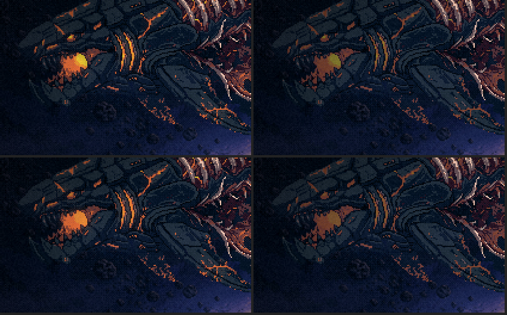
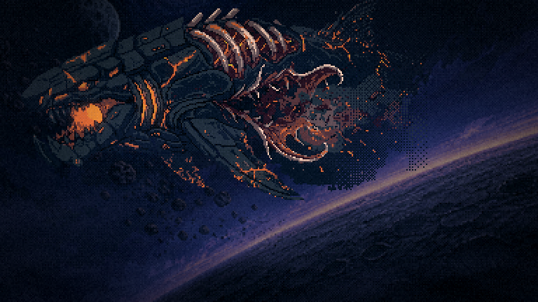
Hoje
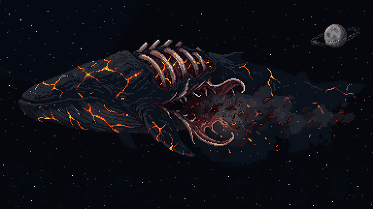
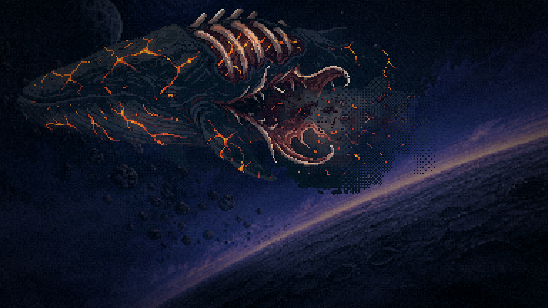
Edição do conceito o caminho que chegou
O conceito é a imagem editada, e a base aprovada é a referência. Composição, rombo, costelas, nuvem e teia de lava ficam; o desenho troca.
Edição 72 a minha aposta
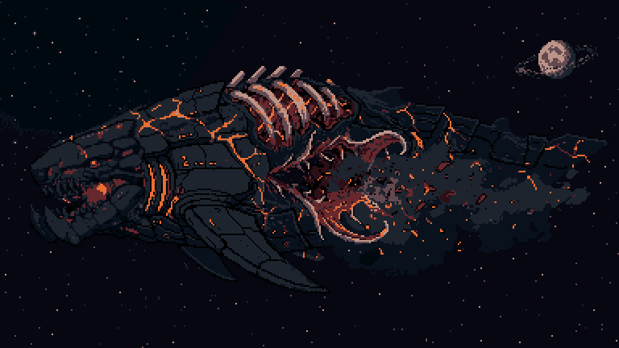
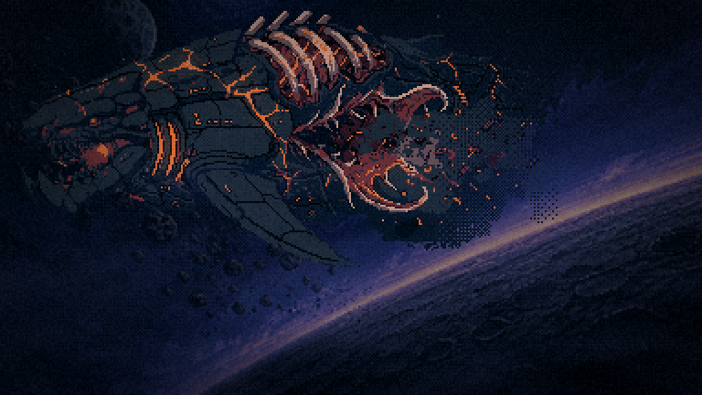
Edição 74
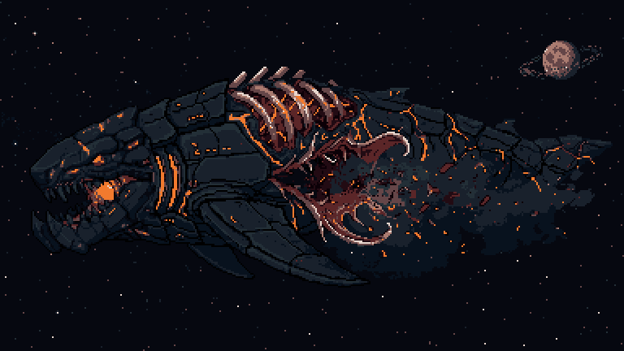
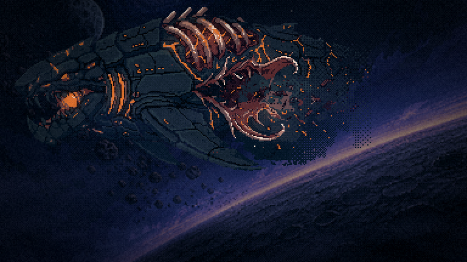
Edição 71
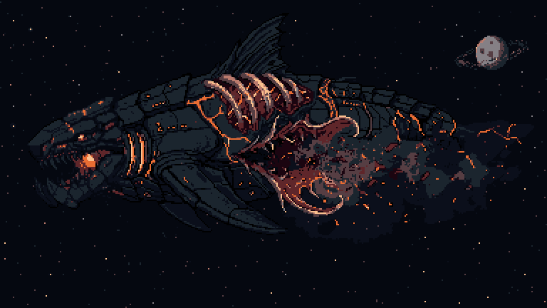
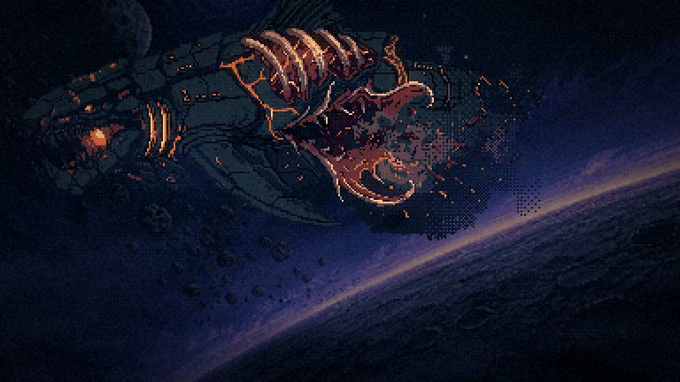
Edição 73
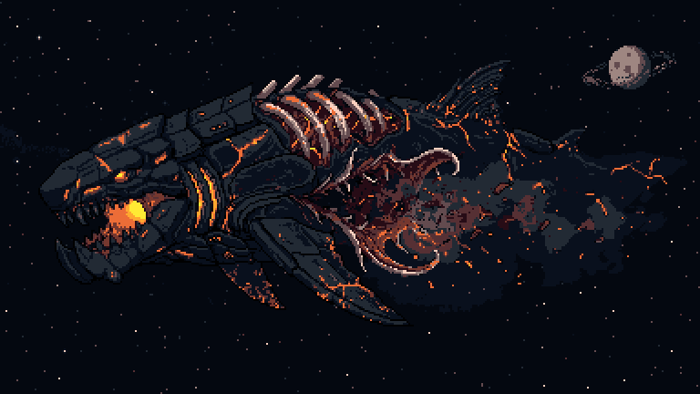
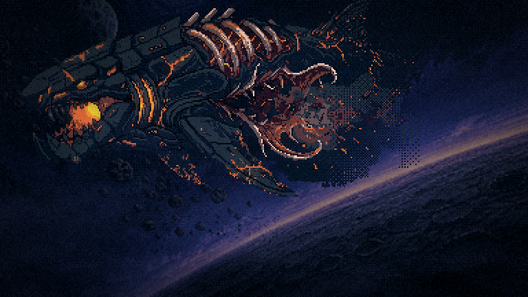
Inpaint da cabeça e da pele
O rombo, as costelas e a nuvem são os pixels originais. A cabeça veio grande, rosnando, com dentes claros.
Inpaint 72
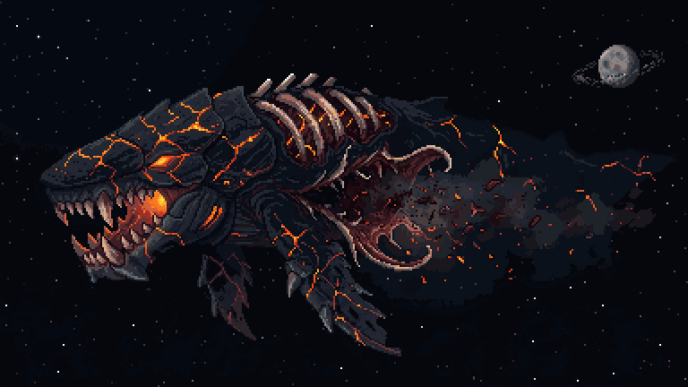
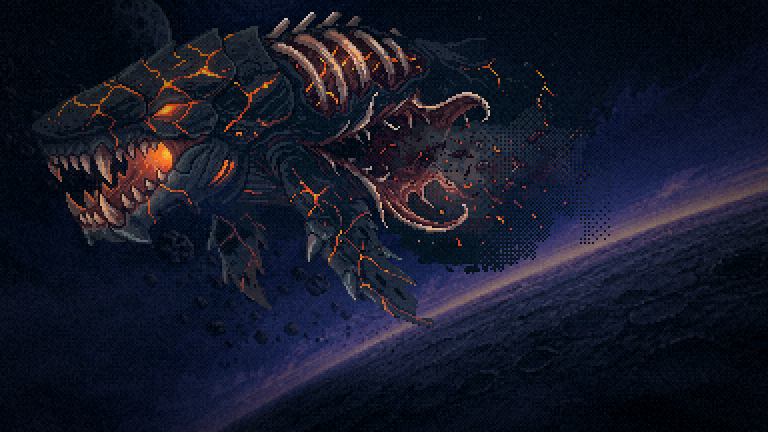
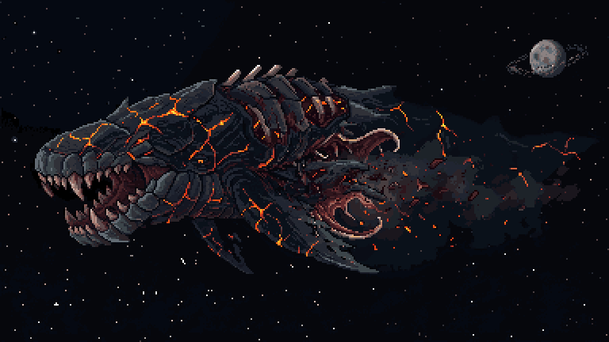
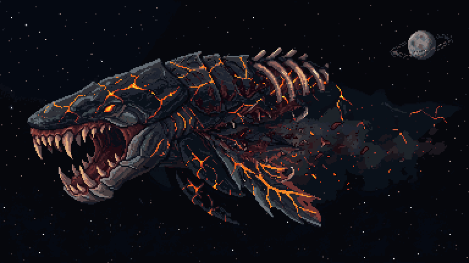
Geração com as duas referências
Vieram sem o espaço de fundo, e duas ganharam rabo, fugindo da composição. Ficam só para registro.
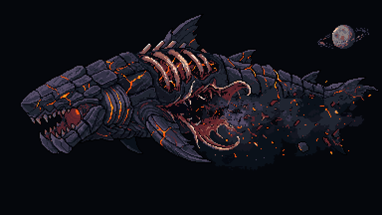
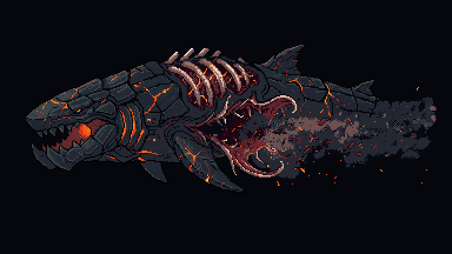
Depois da escolha
- retoque Só se você apontar algo no escolhido: um inpaint localizado (a boca, uma nadadeira), sem mexer no resto.
- cena Instalar o recorte (corpo frio + lava) no lugar do
f8-leviata, com o antigo indo paraassets/raw/*-original.png. RemedirFERIDA_X/Yno rombo novo e rodar aprobe-interlude4. - o resto O mesmo método, partindo do conceito de cada cena: a reentrada (capítulo 5), a carcaça na lua (capítulos 6 e 7), o menu e a silhueta.
Ferramentas: scripts/_leviata/_final-conceito.mjs (edit | gera | inpaint | mascara), _recortar-novo.mjs (o processo de hoje, conferido sem nenhum pixel diferente) e _capturar-final.mjs.